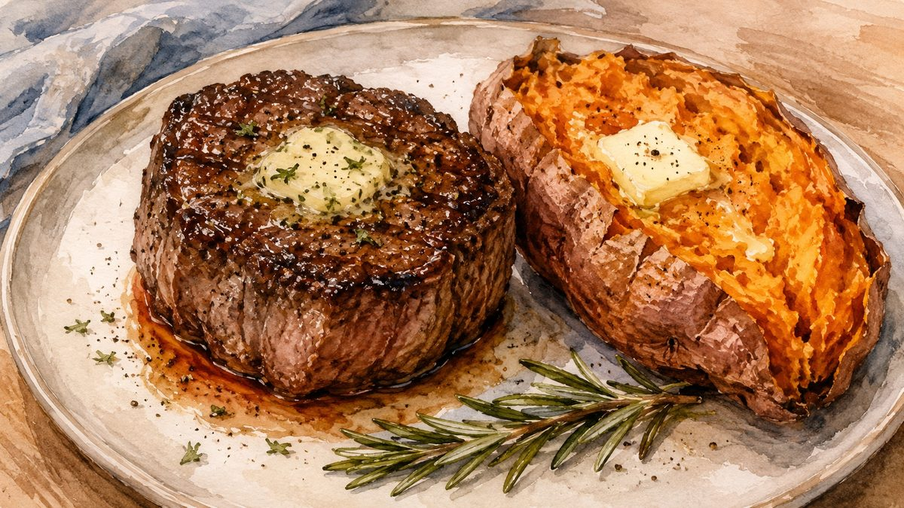

Filet Mignon
with Sweet Potato
Pan-seared, oven-finished, and ready in under 40 minutes

Filet mignon is one of the very best choices for a low-histamine diet — it's a lean, mild cut that cooks quickly and pairs beautifully with a simple sweet potato. This recipe uses the classic steakhouse method: salt the steak early, sear it hot, then finish in the oven. The result is a deeply golden crust with a juicy, tender center.
The key is using freshly purchased meat and cooking it the same day. Histamine increases as meat ages, so fresh is everything. Coconut aminos make a wonderful low-histamine finishing sauce — mild, slightly savory, and a perfect complement to the steak.
Ingredients
The Steak
- 5–8 ozfilet mignon, fresh (purchased same day)
- To tastesea salt
- Drizzleolive oil
The Sweet Potato
- 4–6 ozsweet potato (1 medium)
To Serve (optional)
- 1 tspunsalted butter (for steak or potato)
- 1–2 tsplow-sodium coconut aminos (as a steak sauce)
🌿 Histamine-Safety Notes
Buy your filet mignon fresh the same day you plan to cook it — histamine builds as meat ages. Cook and eat immediately. Coconut aminos are a great low-histamine alternative to soy sauce or Worcestershire. If you have leftovers, freeze them right away rather than refrigerating overnight.
Instructions
- Salt the steak early. Place your filet mignon on a plate on the counter, season both sides with salt, and set a timer for 20 minutes. This draws out a little moisture, then reabsorbs it for a more flavorful, evenly seasoned steak.
- Preheat the oven to 375°F while the steak rests.
- Heat the pan. When the timer goes off, add a drizzle of olive oil to a stainless steel or cast iron skillet and heat over medium heat for 3–5 minutes, until the oil just begins to smoke.
- Sear the steak. Place the filet in the pan and cook for 2½–3 minutes per side without moving it, until a deep golden crust forms.
- Finish in the oven. Transfer the skillet to the oven and cook for 6 minutes for a 1-inch thick steak. If your steak is thicker, add 2–4 more minutes. (Use a meat thermometer if you have one: 130°F = medium-rare, 140°F = medium.)
- Microwave the sweet potato. While the steak is in the oven, pierce the sweet potato a few times with a fork and microwave for 3 minutes. Flip it over and microwave for another 3 minutes. Remove and cover loosely with foil to keep warm.
- Rest the steak. When the steak comes out of the oven, transfer it to a clean plate and tent loosely with foil. Let it rest for 5 minutes — this keeps all the juices inside.
- Serve immediately. Plate the steak alongside the sweet potato. Add a little butter to each if you like, or drizzle the steak with coconut aminos as a finishing sauce.
Tips & Variations
- The 20-minute salting step makes a real difference — don't skip it. It seasons the steak all the way through, not just the surface.
- Your pan must be truly hot before the steak goes in. If the oil isn't just smoking, wait a little longer — a proper sear is what creates that crust.
- Coconut aminos can be found at most grocery stores or online. Low Sodium Coconut Aminos by Coconut Secret is a widely available brand.
- Freeze any leftover steak immediately — don't leave it in the fridge overnight, as histamine builds quickly in cooked meat.